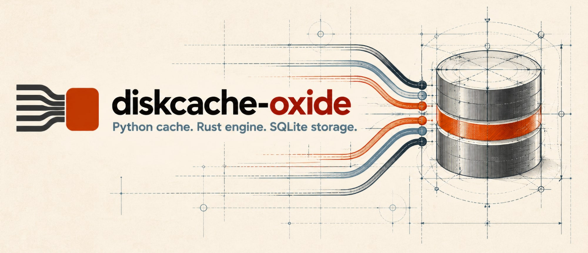

diskcache-oxide
A shared, durable disk cache for Python, with a Rust engine, SQLite storage, and a diskcache-compatible API.
Python cache. Rust engine. SQLite storage.
Every Python web app arrives at the same crossroads. A query that was fine at launch is now the slowest thing on the page, so you cache its result in a dict, and for one afternoon you’re a hero. Then the app goes under gunicorn with four workers, and there are four dicts, each warming up alone and each forgetting everything the moment its worker is recycled. So you reach for Redis, and now there’s a server to deploy, secure, monitor and pay for, whose entire job is to remember the answer to one query.
python-diskcache showed there was a third road: a cache that is just a directory. Every thread and every process on the machine opens the same path and sees the same entries, and the entries are still there tomorrow, because a directory doesn’t restart. No daemon, no network hop, no second system to keep alive. It’s the kind of idea that sounds too simple to be fast, and for years that was the catch.
diskcache-oxide removes the catch. It keeps the diskcache API you already know and rebuilds everything beneath it for where Python is going: many cores, many worker processes, free-threaded CPython, and async frameworks that can’t afford a slow call on the event loop. The engine is Rust. The storage is SQLite. The Python layer is as thin as it can be. A cached read comes back in well under a microsecond, throughput stays flat as you add threads instead of collapsing, nothing on your disk is a pickle unless you asked for one, and memory and disk use stay where you set them.
Source on GitHub: https://github.com/mikeckennedy/diskcache-oxide · Issues
Here is the whole idea on one screen. Four workers, one directory. The cache makes the slow query cheap, and add() elects exactly one worker to run the hourly job, because a write that’s atomic across processes is a lock if you squint:
import os
from diskcache_oxide import Cache
## Every worker process opens the same directory and sees the same cache.
cache = Cache('/var/cache/my-app')
def popular_episodes() -> list[dict]:
if (episodes := cache.get('episodes:popular')) is not None:
return episodes
episodes = db.load_popular_episodes()
cache.set('episodes:popular', episodes, expire=300)
return episodes
## Only one worker in the whole fleet runs the hourly job: add() is atomic across processes.
if cache.add('job:refresh-feeds', os.getpid(), expire=3600):
refresh_feeds()Where this is going
diskcache-oxide is being built in three stages. The first is the one you can use today.
- A better diskcache. The Cache you already know, rebuilt in Rust: about half the read latency, many times the threaded throughput, safe across
fork(), safe on free-threaded Python, and no pickle by default. This is the core that exists now. - The complete local caching toolkit. A native
AsyncCachefor FastAPI, Litestar and friends,memoize, tags, more eviction policies,DequeandIndex, and the coordination recipes (locks, semaphores, throttles, stampede protection) that make a shared cache useful as more than a cache. Two pieces of this stage arrived early:FanoutCachesharding for apps with many writing processes, andtransact(). - A cache server. The same Rust engine served over the network: a Redis-style central cache for a fleet of machines, with SQLite underneath instead of RAM. As the only owner of its files, the server can use SQLite’s exclusive locking mode, which already measures about 40% faster reads than the shared-directory library.
See Vision and roadmap for how each stage breaks down.
Why diskcache-oxide
- Fast where web apps spend their time. A cached get takes about 0.75 µs, less than half of diskcache’s latency, which is cheap enough to call straight from the event loop. Add threads and the gap opens: at a 99:1 read/write mix with 8 threads on a GIL build, diskcache’s per-thread connections pile into each other and its throughput falls to a trickle, while oxide’s stays flat, 16× ahead.
- Built for free-threaded Python. The extension is compiled with
gil_used = falseand never leans on the GIL for correctness, which matters on a build where there’s no GIL to lean on. Every change is tested on 3.14, 3.14t, 3.15 and 3.15t. - Safe across
fork(). gunicorn, Celery’s prefork pool andmultiprocessingcreate workers by copying the parent, and the copy includes whatever SQLite lock a thread was holding at that instant. A process-wide fork barrier makes sure no child is ever born holding half a transaction. - No pickle on your disk. Values are msgpack (or JSON) with exact type tags, so tuples, sets, datetimes, big ints and NaN come back as what you stored, not as whatever the format could manage. Your own types are registered once and read back only where the name is registered. Pickle is opt-in, and a cache that didn’t opt in refuses to unpickle anything it finds, however it got there.
- Predictable memory and disk. A bounded connection pool, a 1 MiB page cache per connection, a write-ahead log that trims itself back down, and a checkpoint() for when you want it empty now.
- Correct under pressure. clear() never deletes writes that landed while it ran, expire() removes every expired entry, and a reader racing an overwrite gets the old value or the new one, never a spurious miss. Each of these is a bug in diskcache, found by running the same test suite against both libraries, with a reproduction in the repo.
- A real off switch. NullCache turns caching off without a single
if cache is not None:in your code, and can keep forwarding invalidations to the real cache while it’s off, so nothing stale is waiting when you turn it back on. - Named caches with an off switch. Caches registers an app’s caches once, opens each on first use, hands out a NullCache while one can’t open, and gives an admin page its counts and sizes.
- Errors you can act on. Every exception says what went wrong, in words, and the errors page says what to do about it. Nothing is swallowed unless you turned on the setting that swallows it.
- Typed. Ships
py.typedand a CacheLike protocol that Cache, FanoutCache and NullCache all satisfy.
Status
0.1.0, the first release. The core Cache, FanoutCache, transact(), NullCache and Caches are complete. Before it shipped, the code ran three gauntlets. A conformance suite runs the same tests against real diskcache 5.6.3, so every difference is a decision written down in Divergences, never an accident. A sanitizer pass put the whole codebase, bundled SQLite included, under Miri, ThreadSanitizer (with a free-threaded CPython built under it too), AddressSanitizer and LeakSanitizer. And a 24-hour soak threw processes, threads, forks, SIGKILL and clear() under load at one directory for a day, then checked it for corruption, lost writes and leaks. It’s on its way into production at Talk Python.
Not here yet: memoize, tags, AsyncCache, Deque and Index, keys other than str, custom disk= classes, eviction policies other than least-recently-stored, and the coordination recipes. See Vision and roadmap.
Install
pip install diskcache-oxideIt supports CPython 3.14 and 3.15, including the free-threaded builds (3.14t and 3.15t), on macOS and Linux. Wheels cover macOS on Apple Silicon and Linux (glibc) on x86_64 and aarch64 for all four Pythons, with the compiled engine and a bundled SQLite inside, so there’s nothing else to install. Anywhere else pip builds from source, which needs the latest stable Rust toolchain. Windows support is planned.
During 0.x, a release that changes the on-disk format bumps the minor version and says so first in its changelog entry: delete existing caches when you upgrade to it. Until you do, opening one raises FormatMismatchError. It’s a cache, so the cost is a cold start.
Coming from diskcache?
Change the import and point it at a new directory. That’s the migration. diskcache-oxide keeps diskcache’s API but uses its own file format (diskcache-oxide.sqlite), so it never reads or touches an existing cache.db:
## from diskcache import Cache
from diskcache_oxide import Cache
cache = Cache('/var/cache/my-app-oxide')Switching from diskcache covers every difference you might notice, which is mostly things getting better and now and then things getting stricter.
Where to next
Read them in order for the whole story, or jump straight to the one that bit you.
- Getting started: create a cache, store and read values, expiry, counters, eviction, timeouts and
durable=True. - Switching from diskcache: what changes, and why.
- Errors and what to do about them: every exception the library raises, what it means and the fix.
- Vision and roadmap: what exists today and what’s coming.
- Serialization: msgpack and JSON with exact types, and why pickle is opt-in.
- NullCache: caching switched off without changing call sites.
- Caches: a registry of named caches for an app with several.
- FanoutCache: sharding for many processes that write.
- Transactions: several writes that land together.
- Concurrency and forks: threads, processes, free-threading and the fork barrier.
- Storage and WAL: what’s on disk, memory bounds, and the write-ahead log.
- Performance: the measured numbers, and where the next speedups come from.
- Divergences: every deliberate difference from diskcache, with the reason.
- Recipes: caching expensive calls, stale-while-revalidate, upstream HTTP responses, invalidation, your own types, job claims, rate limiting, counters, single-use keys, sessions, web workers, asyncio and testing.
- Agent skill: a cheat sheet for AI coding agents, with llms.txt and llms-full.txt alongside.